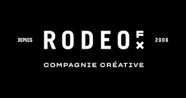

L'entreprise
Missions
Assistance technique aux artistes et employés : connexion, logiciels, périphériques. Premier point de contact pour les incidents du quotidien.
Installation et configuration de stations de travail haute performance pour les nouveaux collaborateurs et les projets en cours.
Câblage et organisation des équipements en baie de brassage pour maintenir une infrastructure réseau propre et performante.
Suivi et mise à jour de l'inventaire matériel (postes, écrans, switches, câbles) et maintenance préventive du parc informatique.
Rédaction de procédures internes et mise à jour de la documentation pour l'équipe IT.
Participation au déménagement complet du studio Paris : démontage, transport et réinstallation de l'intégralité du parc informatique, câblage et remise en service des postes dans les nouveaux locaux.
Gestion et support du matériel métier propre aux studios VFX : tablettes Wacom, écrans de référence colorimétrique, salles de projection et licences logicielles spécialisées (Nuke, Maya, Houdini).
Configuration et modification des affectations VLAN sur les switchs pour isoler les flux, intégrer de nouveaux équipements ou adapter la segmentation réseau aux besoins de la production.
Compétences acquises
Bilan
Une immersion dans un environnement technique hors du commun. Les infrastructures du secteur VFX m'ont exposé à des contraintes de performance et de disponibilité bien au-delà du cadre scolaire. J'y ai développé mon autonomie, ma réactivité et la rigueur nécessaire pour intervenir sans perturber la production.
Documents